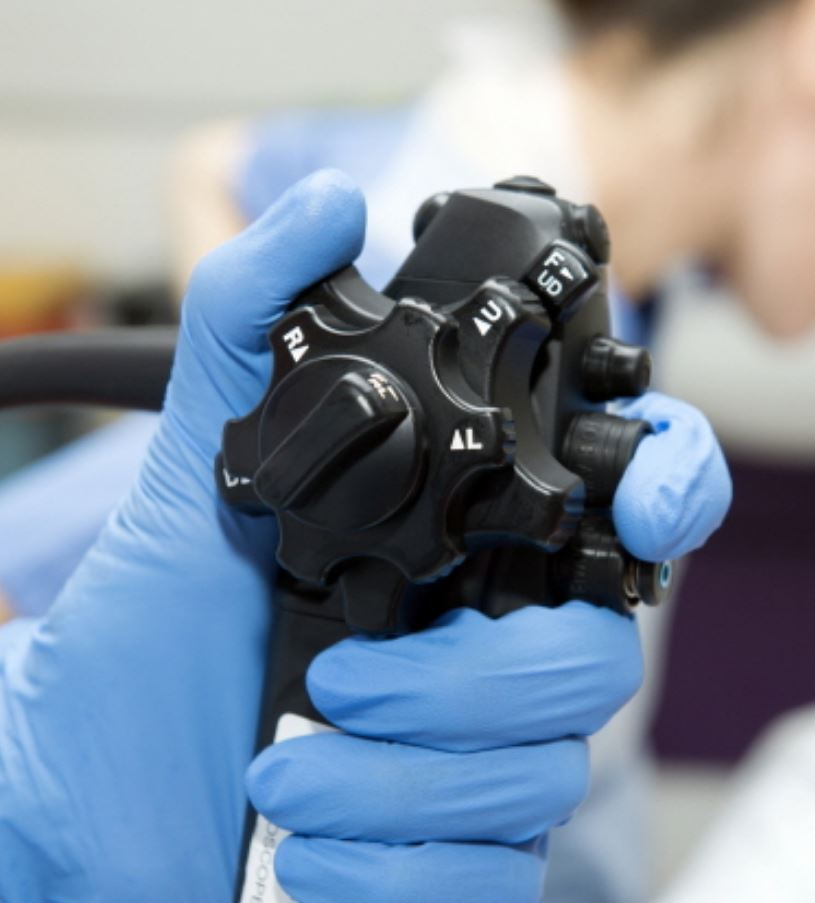

전체
"코로나 4차 유행, 3차 유행보다 확산 가능성 더 크다"
2021-04-09 12:13
3차 유행 대비 3배 이상 정체기 4배 이상 환자 규모
중대본, 역학조사 역량강화 주문…의료체계 여력 충분
병원·개원가
"치매관리법 개정 막자" 의료계 대국민 여론전 총공세
2021-04-09 15:45
신경과의사회, 1만장 탄원서 제출 이은 대국민 설문
의료진들 제도 문제점 지적 "전문가 의견 지속 전달"
학회·학술
효용성 무너진 위암 내시경 추적 관찰…지침 바뀔까
2021-04-07 05:45
848명 5년 추적 관찰 결과 내시경 검사 근거 떨어져
림프절 재발 등 CT에만 관찰…"선택 사항으로 남겨야"

제약·의료기기
EMA, AZ 백신 혈전 부작용 입장 재확인 "이익 상회"
2021-04-08 12:02
안전위원회, 86건의 보고 사례 검토 후 결론
"상관성 있어도 백신 접종 이점, 위험보다 커"

맞춤형 정보 구독 안내
관심 분야의 의학 소식을 카카오톡, 이메일 등 자주 사용하는 SNS에서 받아보세요. 매일 올라오는 다양하고 질 높은 소식을 본인의 관심사에 맞춰 빠르게 접할 수 있습니다.
맞춤형 정보 구독 신청 바로가기 (무료)